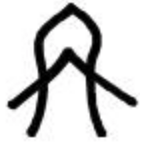

Yu 鱼 (Fish) — Character Story & Etymology
An ancient pictograph traced to Yangshao pottery, c. 4800–4300 BC.
Glyph evolution



Origin and oracle bone forms
鱼 is an ancient pictograph. Shapes like this appeared on many pottery vessels dating from 4800–4300 BC. In that era, the Central Plains had abundant waters, and fish and turtles were easy to catch. The oracle bone script is a simplified drawing of a fish.
There are two common variants: one with fins on both sides, the other without fins, showing a pointed head, body and sharp tail. Some references treat this second finless form as the character “冉”, but I believe “冉” is just an alternative form of 鱼.
Lost ancient pronunciation and dialects
The ancient pronunciation of 鱼 has been lost. In some regions it is pronounced yai, yu or n. The sound n may be related to the character “冉”.
Characters built from 鱼
More than 100 characters are built with 鱼 as a component; common ones include 鲜, 穌, 魯 and 爯.
羊 usually refers to white goats, so this is fish + white: white fish soup. Fish soup turns milky white and tastes wonderfully fresh, almost as if seasoned with MSG. A local custom uses fish soup to help breastfeeding mothers produce more milk. That is why people say “鲜”. The ancient sound of 鲜 comes from 羊. In English it is often translated as fresh, but that is not quite right: “鲜” means delicious and appetite-arousing.
口 stands for a human speaking mouth. Fish have no soft muscular tongue, only a rigid bony tongue that cannot move freely, so they cannot make sounds. The character therefore describes someone slow-witted, clumsy with words and poor at communication. The ancient sound of 鲁 comes from 口.
Example sentences
“我爱食鱼”
Pinyinwǒ ài shí yú
EnglishI love eating fish.
“我爱钓鱼”
Pinyinwǒ ài diào yú
EnglishI love fishing.
“鱼缸里有5条金鱼”
Pinyinyú gāng lǐ yǒu wǔ tiáo jīn yú
EnglishThere are five goldfish in the fish tank.
“此羊肉汤很鲜”
Pinyincǐ yángròu tāng hěn xiān
EnglishThis mutton soup is very delicious.
“办事别太鲁”
Pinyinbàn shì bié tài lǔ
EnglishDon't be too rash when handling things.
朝鲜 is a phonetic loanword. It was an early Chinese transliteration of a northeastern tribal name, and is sometimes also rendered as 肃慎 or 扶桑.